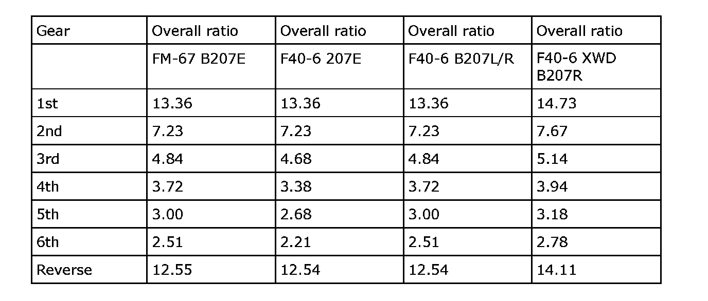

Gear Ratio
Gear ratio
Final drive ratio F40-6 Z19DTR: 3.35
Final drive ratio F40-6 DTR, F40-6, FM67 B207: 3.55
Final drive ratio F40-6 XWD, B207R: 3.76
Final drive ratio F40-6 Sedan/Wagon, B207: 3.09. On B207L/R selectable 3.35
